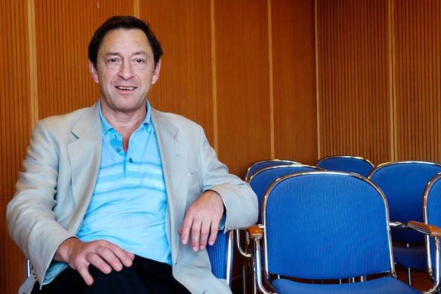

Häromåret lanserade den brittiske ekonomen Guy Standing termen ”prekariat” för den nya kategori människor som drabbats av den rådande arbetsmarknadens hårda villkor. I sin nya bok föreslår han 29 politiska åtgärder för att förbättra situationen.

Bröderna Jean-Pierre och Luc Dardennes senaste film ”Två dagar, en natt” skildrar individens utsatthet i ett samhälle där den sociala solidariteten har krackelerat. När den unga tvåbarnsmamman Sandra (Marion Cotillard) efter en längre tids sjukskrivning för depression vill återvända till sitt jobb på en fabrik för solpaneler, får hon till sin bestörtning veta att hon troligtvis kommer att bli uppsagd. Hennes 16 arbetskamrater har nyligen ställts inför ett val: antingen får de varsin bonus på 1 000 euro men då mister Sandra jobbet, eller så låter de henne komma tillbaka och förlorar därmed sina bonusar.
Merparten av dem har röstat för den förra möjligheten, men det finns ännu en strimma hopp för henne, eftersom en sluten omröstning kommer att äga rum måndagen därpå. Det betyder att Sandra har helgen på sig att försöka övertala en majoritet av arbetskamraterna att låta henne få behålla jobbet. Med gråten i halsen och en burk lugnande tabletter i axelväskan inleder hon sin förnedrande, ångestladdade kamp mot klockan i hopp om att hinna söka upp var och en av dem före måndagen.
Att ställa upp för en desperat arbetskamrat som hotas av uppsägning visar sig vara långtifrån en självklarhet. Hos några personer i filmen är det girigheten som styr den moraliska kompassen. Bröderna Dardenne undviker dock svartvita förenklingar genom att förmedla bilden av en hård, sammansatt verklighet, där arbetslöshet, prekära levnadsvillkor och ovissa framtidsutsikter hänger som ett damoklessvärd över många människors huvuden.
Liksom Sandra brottas åtskilliga människor både i Sverige och på andra håll i världen med social otrygghet och en gnagande oro inför morgondagen – arbetslösa, långtidssjukskrivna, timanställda, de som lever på tidsbegränsade jobb och/eller vars osäkra inkomster knappt täcker boendekostnader och övriga hushållsutgifter. De är ofta skuldsatta, och knuffas ut i ännu större ekonomisk osäkerhet av sms-lånebranschen. I Sverige hamnar exempelvis 160 personer om dagen hos kronofogden på grund av obetalda sms-lån. Det rör sig om 30 000 ärenden bara under första halvåret i år.
Alltfler människor ansluter sig till prekariatet, en enligt den brittiske ekonomiprofessorn Guy Standing framväxande klass präglad av kronisk otrygghet. Standing, som är verksam vid Londons universitet, har fått stor internationell uppmärksamhet för Läs också:”Prekariatet. Den nya farliga klassen”
från 2011. Uppenbarligen är han djupt besviken och minst sagt upprörd över makthavarnas likgiltighet för prekariatets försämrade levnadsvillkor och urholkade medborgerliga rättigheter, vilket också framgår av hans senaste, angelägna bok, ”En färdplan för prekariatet. Vägen till ett fullvärdigt medborgarskap” (övers: Joel Nordqvist, Daidalos). Med avstamp i en vision om det goda samhället och med det engelska folkfördraget Magna Charta från 1215 som förebild, föreslår Standing här 29 riktlinjer för ett handlingsprogram som ska fokusera på frågor som rör prekariatet.
Prekariatet är en splittrad, heterogen klass. I sin nya bok påpekar Standing att prekariatet delvis rymmer en stor grupp människor som tidigare hört till arbetarklassen och som lätt låter sig lockas av populister med nyfascistisk agenda, vilket varit fallet i Grekland och Ungern. Till prekariatet hör också allt större skaror av så kallade denizens eller ”naturaliserade”, det vill säga migranter och etniska minoriteter med minst trygga rättigheter. De blir ofta måltavla för demonisering. Prekariatets tredje, snabbt växande del består av de högutbildade vars förväntningar om en ljus framtid och goda karriärmöjligheter inte blivit infriade. Att de är frustrerade över att inte kunna få ett arbete som motsvarar deras universitetsutbildning förklarar varför de inte sällan saknar framtidstro.
Men de börjar få en kollektiv röst, menar Standing. I en text med det talande namnet ”Kommuniké från en frånvarande framtid”, publicerad i elektronisk form i september 2009, skriver det självbenämnda ”Research and destroy”-kollektivet vid University of California, Santa Cruz, bland annat: ”’Arbeta hårt, lek hårt’ har varit det överentusiastiska mottot för en generation under upplärning… för vad? – att rita hjärtan i cappuccinoskum /…/ Vi arbetar och vi lånar för att kunna arbeta och låna.” För övrigt har det visat sig att många deltagare i Occupy Wall Street-rörelsen år 2011 tillhörde prekariatets högutbildade samt att drivkraften och energin kom från dem snarare än från prekariatets förvirrade delar.
Hur och när började prekariatet ta form? Från 1980-talet och framåt skapade den nyliberala ideologin förutsättningar för globaliseringen, vilket innebar att arbetsmarknaderna avreglerades för att bli mer flexibla, samtidigt som mekanismer för social och ekonomisk trygghet pressades tillbaka och utbildningen varufierades för att tillgodose näringslivets behov, menar Standing. Det var under de decennierna som prekariatet växte fram. Den nyliberala modellen, som gett fritt spelrum åt marknadskrafterna och belönat de mest konkurrenskraftiga, har med hans formulering banat väg för en varufiering av politiken och en ”uttunning” av demokratin.
Eftersom regeringarna har inriktat sig på att tillfredsställa en majoritet med förmåner, skattesänkningar och subventioner har en minoritet missgynnats, berövats rättigheter och hamnat i en prekär livssituation. Sedan 2008 har åtstramningseran medfört större ojämlikhet, växande arbetslöshet, fattigdom och hemlöshet: ”Medan regeringarnas skuldsaneringsstrategi fokuserade på att hjälpa banker och bolag, steg den privata skuldsättningen mot en bakgrund av fallande löner och minskande beskattning av de rika och kapitalet.” Fler har således blivit fattiga och osäkra på sin framtid, fler har anslutit sig till prekariatet.
Än så länge befinner sig prekariatet enligt Standing i en fas av ”primitiv rebellverksamhet”, vars förutsättningar skapades av bland annat upploppen i Paris förorter och i engelska städer, av Occupy-rörelsen, den arabiska våren, proteströrelser och demonstrationer runt om i världen – i Portugal, Grekland, Spanien, Turkiet, Brasilien. År 2011 var med all sannolikhet höjdpunkten på denna primitiva rebellfas.
Om man ska tro Standing kan en global omdaning vara i annalkande, samtidigt som en ny progressiv vision om det goda samhället försöker finna sin form. De 29 tänkbara politiska åtgärder och institutionella förändringar som han ingående diskuterar i sin nyutkomna bok syftar till att förbättra prekariatets situation, och kan ses som ett övergripande ramverk för handlande. Reglera det flexibla arbetet, återskapa yrkesgemenskaperna, undanröj fattigdoms- och prekaritetsfällor, garantera rättssäkerhet för alla, det är några av artiklarna i Standings färdplan för prekariatet. Han föreslår också en reglering av sms-lånen, så att de blir marginella och sällsynta. I dag tjänar den blomstrande sms-lånebranschen pengar på att medvetet låna ut mer än låntagarna kan hantera. I Storbritannien hade den år 2012 drygt en miljon kunder i månaden och lånade ut mer än två miljarder pund om året. Den genomsnittliga sms-låntagaren i USA tar ut elva lån om året, i många fall i syfte att betala av på tidigare skulder. I Sverige förbjöd Konsumentverket nyligen företaget Grandvik att låna ut pengar till konsumenter, detta efter en granskning av hur snabblåneföretagen sköter sin kreditprövning.
Standing, som är en av grundarna till Basic Income Earth Network, ett nätverk med förgreningar i många länder, menar att regeringar också borde verka för införandet av en garanterad basinkomst som en medborgerlig rättighet. Detta har under en längre tid varit en av hans hjärtefrågor. Med hjälp av en gedigen, väl avvägd argumentation bemöter han en rad invändningar som kommit från olika politiska håll, däribland påståendet att en basinkomst skulle vara ekonomiskt ogenomförbar. Enligt hans förslag skulle man kunna genomföra det genom en omfördelning av utgifter från subventioner, skattelättnader och behovsprövade bidrag till en basinkomst. Flera pilotprojekt har visat att införandet av en basinkomst har gynnsamma effekter på människors liv. Sådana pilotprojekt genomfördes exempelvis i Kanada i slutet av 70-talet och i flera indiska byar mellan 2011 och 2013.
Bland Standings mest tankeväckande förslag figurerar även en avvarufiering av utbildningen. Globaliseringen har utmynnat i en kommersialisering av utbildning runtom i världen, eftersom drivkraften har varit att göra vinster, att förbereda unga människor för jobb samt göra dem konkurrenskraftiga. Detta har lett till ett växande prekariat. För honom är Sverige ett exempel på varufierad utbildning som även spritt sig till grundskolan och specialistutbildningarna.
Standing förespråkar en reglering och en begränsning av den globala utbildningsindustrin. Som han med fog påpekar är utbildningens syfte att ”erbjuda en väg till kunskap och att stimulera nyfikenhet, etiska värderingar och kreativitet”, och samhället behöver av sociala och kulturella skäl även filosofer, poeter, arkeologer och historiker. Utbildningen borde förbereda människor till att bli medborgare, inte arbetstagare. I ett kommersialiserat samhälle präglat av affärstänkande och utilitaristisk hållning hos många politiker riskerar livsviktiga värden som medkänsla och empati att marginaliseras. Av det skälet måste utrymmet för etik, empati och moral vidgas inom utbildningen.
Låt oss återvända till Sandra, huvudpersonen i ”Två dagar, en natt”. Rakryggad lämnar hon på slutet fabriksdirektörens kontor. Det svar som hon just gett på hans erbjudande är en gripande solidaritetshandling – och sprider en strimma av ljus. Att den sociala solidariteten, en av grundvalarna i det goda samhället, måste återuppväckas löper som en röd tråd genom Standings ”En färdplan för prekariatet”.
Jeana Jarlsbo är fil dr i franskspråkig litteratur, kulturskribent och översättare.